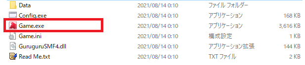

Synopsis
あらすじ
主人公は交際トラブルがスクープされ、自身のバンドが解散。
そのうえ父は不祥事で逮捕され、母はショックで寝込んでしまった。
その後も何もかもうまくいかなくなり、やり場のない怒りが募っていた主人公。
鬱憤晴らしに何故かこんなことを思いつく。
「そうだ、街からクリスマスを消し去ってやろう。」
Rule
ルール
街なかにいるすべてのカップルを家に帰らせましょう。
リア充を家に帰らせる手段は以下の2通り。手榴弾を使って画面内にいるリア充を怪我しない程度に爆発させる
クリスマスツリーをチェーンソーやノコギリで切り倒す
ただし、主人公がカップルに近づくと、主人公のMPが減ってしまいます。
MPが0になったらゲームオーバーです。カップルを避けて移動しましょう。
また、HPが低いと主人公は何もできません。まずは店を探して食べ物を手に入れましょう。
すべてのカップルを家に帰らせることができたらゲームクリアです。
リア充を家に帰らせる手段は以下の2通り。
ただし、主人公がカップルに近づくと、主人公のMPが減ってしまいます。
MPが0になったらゲームオーバーです。カップルを避けて移動しましょう。
また、HPが低いと主人公は何もできません。まずは店を探して食べ物を手に入れましょう。
すべてのカップルを家に帰らせることができたらゲームクリアです。
How to play
あそびかた
起動方法
-
Game.exeを開きます。

 「WindowsによってPCが保護されました」と表示される場合
「WindowsによってPCが保護されました」と表示される場合
-
「スタート」を選ぶとゲームが開始します。
手榴弾について
手榴弾は武器屋で手に入ります。
マップを散策して、武器屋を探しましょう。
手榴弾を手に入れたら、カップルが集まっている場所に移動して手榴弾を投げつけましょう。

するとカップル達は主人公を不審者であると認識し、危険を察知して家に帰ってくれます。
マップを散策して、武器屋を探しましょう。
手榴弾を手に入れたら、カップルが集まっている場所に移動して手榴弾を投げつけましょう。

するとカップル達は主人公を不審者であると認識し、危険を察知して家に帰ってくれます。
クリスマスツリーを切り倒す
クリスマスツリーはチェーンソーまたはノコギリで切り倒せます。
チェーンソーなら1個、ノコギリなら5個必要です。
まずは道具を手に入れましょう。
道具を手に入れたら、クリスマスツリーの前に移動し道具を使います。
このとき、主人公のHPが低いと切り倒せません。
その場合は、食品店を探し食料を手に入れましょう。
HPが十分に残っていれば、ツリーを切り倒せます。
すると、カップルたちは主人公の奇怪な行動にドン引きし、家に帰ってくれます。
チェーンソーなら1個、ノコギリなら5個必要です。
まずは道具を手に入れましょう。
道具を手に入れたら、クリスマスツリーの前に移動し道具を使います。
このとき、主人公のHPが低いと切り倒せません。
その場合は、食品店を探し食料を手に入れましょう。
HPが十分に残っていれば、ツリーを切り倒せます。
すると、カップルたちは主人公の奇怪な行動にドン引きし、家に帰ってくれます。
操作方法
ゲームの操作方法は以下のとおりです。
|
|
主人公の移動、およびメニューの選択 |
|
|
メニューを開く（アイテムの使用など） |
|
|
選択の確定（メニューなど） |
Movie
プレイ動画
Requirements
動作環境
Windows
OS: Windows10 (32bit/64bit)
RAM: 4GB以上
CPU: IntelまたはAMD 2.0GHz以上
※Windows11では動作未確認です
License
ライセンスについて
このソフトウェアは個人利用のみ許可されています。
エディタを同梱していないため改造はできません。また、再配布等はできませんのでご了承ください。
エディタを同梱していないため改造はできません。また、再配布等はできませんのでご了承ください。
|
|
|
|
|
|
|
|
|
|
|
|
|
|
|
|
|
|
|
|
|
|
動作保証や権利上の保証はいたしません。
|
|
|
|
作者はソフトウェアに対していかなる責任も負いません。
|
|
Materials
素材について
-
WOLF RPGエディター 標準素材
https://www.silversecond.com/WolfRPGEditor/ -
ロゴ作成
はがないジェネレーター
http://hgn.ai/
-
冬なんて嫌いさ
GANO / DOVA-SYNDROME
https://dova-s.jp/bgm/play3879.html -
ふりかけ
かずち / DOVA-SYNDROME
https://dova-s.jp/bgm/play5411.html -
白
チョコミント / DOVA-SYNDROME
https://dova-s.jp/bgm/play5542.html -
Deck the Halls (Jazz)
E's Jammy Jams / Youtube Audio Library
https://www.youtube.com/audiolibrary -
効果音
WOLF RPGエディター 標準素材
https://www.silversecond.com/WolfRPGEditor/
Download
ダウンロード
| ver.1.0（最新版） | 2016/12/24 | ダウンロード |